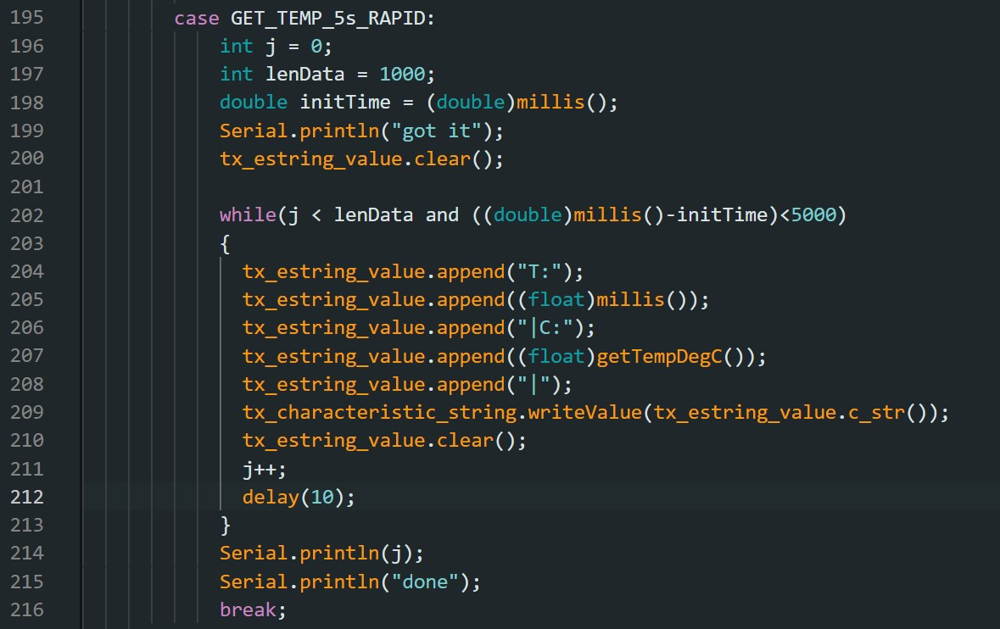

Welcome to my Fast Robots webpage. This page contains all the labs I have completed for this course. I am a mechanical engineering student interested in robotics. I like playing jazz guitar, juggling, and basketball. If you ask me to juggle, I will.
Lab 1
Lab Objective
The goal of this lab was to test the Artemis board with a number of examples to confirm its functionality. This involved testing the LED on the board, the serial output, the temperature sensor, and the microphone.
"Example: Blink it Up"
To test the LED on the Artemis Board, the "Blink it Up" example was used. This code turned the LED on for an specified time, then turned the LED off for a specified time. In the example video below, the LED was on for 2 seconds, then off for 1 second.
"Example2_Serial"
In the second example, the objective was to test the serial monitor output. In this example, the Arduino sent a counting test to the serial monitor. It then allowed the user to type an input into the serial monitor, and the Artemis Board would read this and output the input into the serial monitor. This can be seen in the photo below.
"Example4_analogRead"
The third test involved using the temperature sensor. The temperature was sent to the serial monitor in 10^-3 degrees Celsius. To validicize the sensor, I covered the Atermis board with my hand, and the temperature increased slightly from 32.9 Celsius to 33.1 Celsius.
"Example1_MicrophoneOutput"
This test involed using the microphone to find the loudest frequency. This is shown in the video below.
5000-level: Musical Tuner
This test was done to determine the musical note "A." When the microphone identified an "A," which has a frequency of about 440Hz, the LED would turn on. Otherwise, the LED would remain off. The code here had a range of frequencies +-10 away from 440Hz, as the note can vary slightly. Here, the frequency was found to be 446Hz.
This test was done to develop a musical tuner each note in the key of C major. Specifically, the tuner is able to identify the notes in C major from A4 to G5. The code below shoes the frequencies for each note, as well as a video showing the tuner in action.
Lab 2
Lab Objective
The objective of this lab was to establish a bluetooth connection between the Artemis board and a computer. This lab involved connection Python code to the Artemis using Arduino programming. This will then be used to send data via Bluetooth to use in future labs.
Prelab
The bluetooth software used in this course was not compatible with Windows 11. Becuase of this, the setup involved loading Debian using WSL, Windows Subsystem for Linux. This was loaded onto the Windows 11 laptop, and Python using Jupyter Notebook was loaded through the WSL. Using this system, the Artemis board was able to connect to the Python code.
Connecting the Artemis
Once Debian was loaded onto the laptop, the next step was to connect the Artemis Board to the Python code. The first step in this process was to change the MAC address of the Artemis from the default in the code to the one used in the lab. By uploading the given ble_arduino.ino code file to the Artemis, the MAC address reads c0:07:1c:96:23:44, shown in the figure below.
The MAC address was also changed in the Python code in the connection.yaml file shown below. This allows the Python code to read the device via bluetooth and connect to the Artemis. The second step needed to connect the device was to use a unique UUID address. Many of the Artemis boards in the course share the same MAC address, meaning the Python code might connect to different boards. Because of this, a UUID was needed to create a unique connection to the Artmeis board. This was generated in Python and then put in the "ble_service" line in connection.yaml, as well as the "BLE_UUID_TEST_SERVICE" in the Arduino code.
ECHO Command
In order to test the connection between the Artemis board on the computer, multiple commands were made. The first was the ECHO command. This command sent a character string to the Artemis from the Python code, which then sent the phrase back to the Python code. This command was added to the Arduino code in ble_arduino.ide. Here, echo was added to the list of command types:
The code for the ECHO command is shown below:
In Python, the command is sent and received using these lines of code:
"GET_TIME_MILLIS Command"
The next command involved receiving the current time from the Artemis board. This meant using the millis() function in the Arduino package, then converting this value to a double, and sending it as a string to Python. The Arduino code is shown here:
This is sent to Python, with the code shown here:
"Notification Handler"
The next command involved receiving the current time from the Artemis board. This meant using the millis() function in the Arduino package, then converting this value to a double, and sending it as a string to Python. The Arduino code is shown here:
This is sent to Python, with the code shown here:
GET_TEMP_5s Command
This command involved extracting five temperature readings in the span of five seconds. This involved developing a notification handler that would receive a string of time and temperature values at one time step. It would then extract both time and temperature and print them. This is shown in the Python code:
The Arduino code for the command was then written, and would send a string at each time step.<\p>
This would then print five temperature values in the span of five seconds:<\p>
GET_TEMP_5s_RAPID
This command involved extracting as many temperature readings as possible in the span of five seconds. The Arduino code was similar to the previous command, except it used a while loop until the code either hit 5 seconds, or the maximum amount of data points was extracted.<\p>

This would then print temperature values in the span of five seconds:<\p>
Limitations
Effective Rate and Overhead
T.
Reliability
T.
Lab 3
Lab Objective
The purpose of this lab is to be able to connect sensors to our robot. In this lab, we connected two time of flight sensors in order to find an object’s distance from the robot.
Prelab
For the robot, we are using two identical Time-of-Flight sensors, specifically VL53L1X API. These sensors share an I2C address of 0x52. Because the ToF flight sensors have the same I2C address, we will need to use an I/O pin to connect to one of the ToF sensors and shut it off. After this, we will need to change the I2C address of the one that is currently on. Then we will need to turn the other ToF sensor on. This will allow us to read both sensors as the addresses will be different.
The placement of the two sensors are very important in optimizing the robot's movement. There are 4 possible placements for the ToF sensors that will be considered. One must be in the front, as the car will need to know what it is driving towards. However, the second one can either be placed in the front, one of the sides, or in the back. Placing it in the front will give a more accurate reading of what is in front of the robot because we will be given more readings at one time. However, it will take longer to understand its position, as it will need to rotate to understand its surroundings. Placing it in the back is also a possibility. However, from looking at past years’ robots, it seemed challenging to position the ToF sensor in the back, as much of the hardware was in the way. Because of these reasons, the second ToF sensor will be placed on one of the sides. This will allow the robot to understand its surroundings quicker than with both sensors in the front.
Connecting the Time-of-Flight Sensor to the Artemis
The address displays in the serial monitor as 0x29. Though this is not the 0x52 address shown in the datasheet, the last bit is taken off because it is used as a read/write bit, meaning it is not read in the address. Because of this, the address is either 0x52 or 0x29 because they share the same seven bits except for the one that is not read.
Testing the ToF Sensor
In order to confirm the reliability of the sensor, we need to test its measurement data. This was done by comparing four different measurements. The ToF sensor has three modes, short, medium, and long. The three modes depend on the usage of the robot. The short distance mode has more accuracy. Because of this, a slowly moving robot will benefit because it can react within 1.3m of distance. The long distance mode is beneficial for fast robots. Though there is more sensor noise, the sensor can detect 4m worth of distance, and the fast-moving robot will be able to react in time if it senses something. The medium distance mode is in between both in terms of range and distance. Initially, I believe that the robot should start with the short distance mode. This will minimize the noise of the sensor, and will help initially as we begin to work with the robot. However, through testing the robot in future labs, the 1.3m distance may not be far enough for the robot to react. This will mean that increasing the mode may be necessary.
The short distance mode was tested by taking sensor data at 0.3m, 0.6m, 0.9m, and 1.2m. Ten data points from the sensor were taken at each point and are shown in the graph below. The sensor was very close to the actual measurements, however slightly overshot the actual measurement by 0.01m for each measurement.
Connecting the 2 ToF Sensors
Described in the prelab, the two sensors need to have different I2C addresses in order to be able to gather data from both. To do this, one of the sensors was given 0 power from pin 8, and then the sensor that still was power was changed to have an address of 0x20. The other sensor was then turned on, and both were connected:
For future labs, it is important for the robot to gather data as quickly as possible. To test this, the sensor readings were compared to time, shown in the video below. The time between measurements taken was about 40ms. This is the minimum time between data points, meaning that the limiting factor was the time that the Artemis takes between reading and sending the data.
To test the readings, the distances of both sensors were taken over time, and sent to Jupyter using the notification handler developed in lab 2.
Infrared Measurements
Infrared distance sensors use infrared radiation to detect objects. There are two main types of infrared sensors: active and passive. Active infrared sensors work by emitting infrared radiation, hitting an object and then bouncing back that radiation to the device. This is useful for detecting the range of an object from the device. Passive infrared sensors work by receiving the infrared radiation emitted by objects around the device. This is useful for detecting abnormalities in its proximity. For example, it is beneficial for security purposes to detect a person who shouldn’t be there or any movements in the room. However, this does not determine the distance from an object. An active infrared sensor is better for that, however, it takes longer, as it needs to both send and receive the signal. Because our robot needs to measure distances, the Time-of-Flight sensor is an active infrared sensor.
To test if the Time-of-Flight sensor is sensitive to color and textures, three colors and two textures were tested. White, red, and blue surfaces with similar textures were tested and had the same distance of 250mm from the sensor. This showed that color did not really affect the sensor much. Additionally, smooth plastic and rough cotton was tested, but this also did not affect the sensor, both having about an average distance of 250mm.